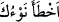

“diretmiştir.” Böylece Allah da onları kâfirlerden saydı. Çünkü onlar Allah’ın
yaratmasını ve rahmetini dile getirmeyip bu büyük nimeti yıldızların ve gezegenlerin
hareketlerine dayandırdılar.
Kim yağmurların yağmasını sadece yıldızların hareketlerine bağlarsa Allah’ı inkâr
etmiş gibi olur. Ancak her şeyi Allah’ın yarattığını ikrar edip yıldızları Allah’ın
yaratmasının işâretleri kabul edenler bunun dışındadır.
“
”, iki yıldızdır ki; onlardan birisi tan yerinin ağarma vaktinde batı tarafında
kaybolur, onu takip eden yıldız ise o saatte doğu taraftan çıkar. Araplar yağmurları,
rüzgârları, sıcaklık ve soğuğu kaybolan bu yıldıza nisbet ederlerdi. Doğan yıldıza da
nisbet ettikleri söylenmiştir. Çünkü o da onun hükmü altındadır. Şu halde “
” batmaya
meyletmiş yıldız demektir. Bir ihtiyacını taleb edip de elde edemeyen kimseye “
Yıldızın şaştı.” denir.
Bir hadiste şöyle buyrulmuştur: “Üç şey Cahiliyye âdetlerindendir: Nesebe sövmek,
ölünün arkasından ağıt yakmak ve işleri yıldızlara bağlamak.”[230]
Zeyd b. Hâlid Cühenî (r.a.)’dan rivâyete göre o şöyle demiştir: “Rasûlullah (s.a.)
Hudeybiye’de geceleyin yağan yağmurun ardından sabah namazını kıldı. Namazdan
çıktıktan sonra insanlara yöneldi ve: “Rabbiniz’in ne buyurduğunu biliyor musunuz?”
buyurdu. Oradakiler: “Allah ve Rasûlü daha iyi bilir!” dediler. Peygamber (s.a.) dedi
ki: “O şöyle buyurdu: “Kullarımdan bazısı bana (îmân ederek) mü’min, bazısı da kâfir
olarak sabahladı. ‘Allah’ın lütfu ile bize yağmur yağdı.’ diyen kimse bana îman etmiş
ve yıldızı inkâr etmiştir. “Falan yıldız sebebiyle bize yağmur yağdı.” diyen kimse ise
beni inkâr etmiş, yıldıza îman etmiştir.”[231] Keşfü’l-esrâr’da böyle geçmektedir.
Dolayısıyla mü’mine gereken kötü îtikad ve düşüncelerden sakınmak, her şeyde tesiri
kulların Rabbi olan Allah’tan görmektir. Yağmur O’nun emriyle iner. Yağmurun bir
beldeye inerken öbürüne inmemesinde, bir zaman inerken diğer zaman inmemesinde,
bazen bir sıfatta bazen başka bir sıfatta inmesinde hikmet, maslahat ve yüce gayeler
vardır.
Meleklerin yağmur damlalarının sayısını ve her yıl yağan yağmur miktarını bildikleri
rivâyet edilmiştir. Çünkü bu değişmez, ancak farklı memleketlere iniş miktarı değişir.
Merfu bir hadiste şöyle buyrulmuştur: “Gece ve gündüzün her bir anında gökten
yağmur yağar; Allah onu dilediği tarafa yönlendirir.”[232]
Yine bir hadiste buyurmuştur ki: “Hiçbir sene diğerinden daha yağmurlu değildir.
Ancak bir topluluk günahlara dalınca, Allah yağmuru başka tarafa çevirir. Bütün
kullar asî olurlarsa, Allah da yağmuru boş alanlara ve denizlere yağdırır.”[233]
Mesnevî’de der ki:
Ey Rabbimiz, sen tertemiz su dök de
Âlemin şu ateşi büsbütün ışık olsun
Denizin suyu olduğu gibi senin buyruğun altındadır